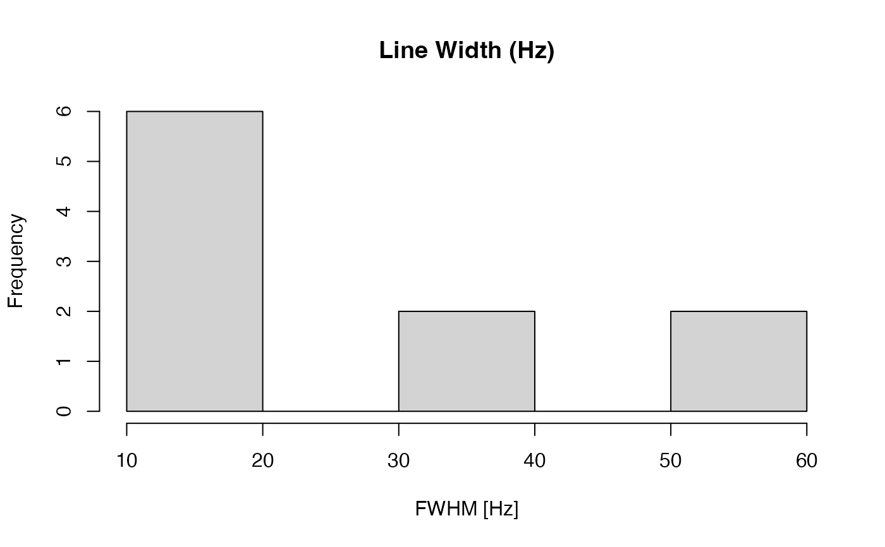

Calculates the full width at half maximum (FWHM, or line width) of a peak within a specified chemical shift range in each NMR spectrum.
Usage
lw(X, ppm, shift = c(-0.1, 0.1), sf)Arguments
- X
Numeric matrix. NMR spectral data with rows as spectra and columns as chemical shift (ppm) variables.
- ppm
Numeric vector. Chemical shift axis corresponding to columns of
X.- shift
Numeric vector of length 2. Chemical shift range that includes the singlet peak (e.g.,
c(-0.1, 0.1)for TSP).- sf
Numeric scalar. Spectrometer frequency in MHz (e.g., 600 for 600 MHz).
Details
For each spectrum, the function extracts the region defined by shift,
interpolates the signal, identifies the full width at half maximum (FWHM),
and converts the width from ppm to Hz using sf.
This is commonly used as part of technical QC for NMR data, especially for evaluating the TSP reference peak, where a sharp peak implies good resolution and field homogeneity.
Note
The chemical shift axis direction is auto-detected. If a spectrum does not have a clear half-maximum width,
NA is returned for that spectrum.
See also
Other NMR:
alignSegment(),
binning(),
cvanova(),
get_idx(),
matspec(),
noise.est(),
normErectic(),
read1d(),
read1d_raw(),
stocsy1d_metabom8-class,
storm()
Examples
# Simulated data example
ppm <- seq(-0.2, 0.2, length.out = 1000)
spec <- dnorm(ppm, mean = 0, sd = 0.02)
X <- matrix(rep(spec, each = 10), nrow = 10, byrow = TRUE)
sf <- 600 # MHz
fwhm_vals <- lw(X, ppm, shift = c(-0.1, 0.1), sf = sf)
hist(fwhm_vals, main = "Line Width (Hz)", xlab = "FWHM [Hz]")
